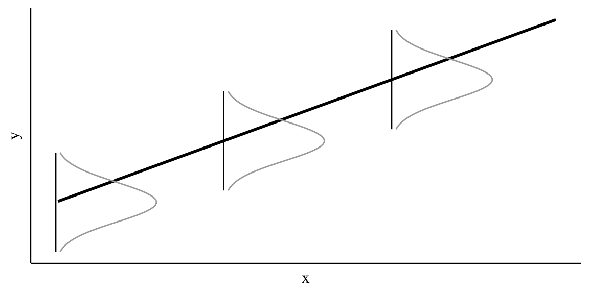

Data Science per psicologi
2021-09-13
Capitolo 1 Introduzione alla regressione lineare bayesiana
Lo scopo della ricerca è trovare le associazioni tra le variabili e fare confronti fra le condizioni sperimentali. Nel caso della psicologia, il ricercatore vuole scoprire le leggi generali che descrivono le relazioni tra i costrutti psicologici e le relazioni che intercorrono tra i fenomeni psicologici e quelli non psicologici (sociali, economici, storici, …). Abbiamo già visto come la correlazione di Pearson sia uno strumento adatto a questo scopo. Infatti, essa ci informa sulla direzione e sull’intensità della relazione lineare tra due variabili. Tuttavia, la correlazione non è sufficiente, in quanto il ricercatore ha a disposizione solo i dati di un campione, mentre vorrebbe descrivere la relazione tra le variabili nella popolazione. A causa della variabilità campionaria, le proprietà dei campioni sono necessariamente diverse da quelle della popolazione: ciò che si può osservare nella popolazione potrebbe non emergere nel campione e, al contrario, il campione manifesta caratteristiche che non sono necessariamente presenti nella popolazione. È dunque necessario chiarire, dal punto di vista statistico, il legame che intercorre tra le proprietà del campione e le proprietà della popolazione da cui esso è stato estratto. Il modello di regressione utilizza la funzione matematica più semplice per descrivere la relazione fra due variabili, ovvero la funzione lineare. In questo Capitolo vedremo come si possa fare inferenza sulla relazione tra due variabili mediante il modello di regressione bayesiano. Inizieremo a descrivere le proprietà geometriche della funzione lineare per poi utilizzare questa semplice funzione per costruire un modello statistico secondo un approccio bayesiano.
1.1 La funzione lineare
Iniziamo con un ripasso sulla funzione di lineare. Si chiama funzione lineare una funzione del tipo
\[\begin{equation} f(x) = a + b x, \end{equation}\]
dove \(a\) e \(b\) sono delle costanti. Il grafico di tale funzione è una retta di cui il parametro \(b\) è detto coefficiente angolare e il parametro \(a\) è detto intercetta con l’asse delle \(y\) [infatti, la retta interseca l’asse \(y\) nel punto \((0,a)\), se \(b \neq 0\)].
Per assegnare un’interpretazione geometrica alle costanti \(a\) e \(b\) si consideri la funzione
\[\begin{equation} y = b x. \end{equation}\]
Tale funzione rappresenta un caso particolare, ovvero quello della proporzionalità diretta tra \(x\) e \(y\). Il caso generale della linearità
\[\begin{equation} y = a + b x \end{equation}\]
non fa altro che sommare una costante \(a\) a ciascuno dei valori \(y = b x\). Nella funzione lineare \(y = a + b x\), se \(b\) è positivo allora \(y\) aumenta al crescere di \(x\); se \(b\) è negativo allora \(y\) diminuisce al crescere di \(x\); se \(b=0\) la retta è orizzontale, ovvero \(y\) non muta al variare di \(x\).
Consideriamo ora il coefficiente \(b\). Si consideri un punto \(x_0\) e un incremento arbitrario \(\varepsilon\) come indicato nella figura 1.1. Le differenze \(\Delta x = (x_0 + \varepsilon) - x_0\) e \(\Delta y = f(x_0 + \varepsilon) - f(x_0)\) sono detti incrementi di \(x\) e \(y\). Il coefficiente angolare \(b\) è uguale al rapporto
\[\begin{equation} b = \frac{\Delta y}{\Delta x} = \frac{f(x_0 + \varepsilon) - f(x_0)}{(x_0 + \varepsilon) - x_0}, \end{equation}\]
indipendentemente dalla grandezza degli incrementi \(\Delta x\) e \(\Delta y\). Il modo più semplice per assegnare un’interpretazione geometrica al coefficiente angolare (o pendenza) della retta è dunque quello di porre \(\Delta x = 1\). In tali circostanze infatti \(b = \Delta y\).

Figura 1.1: La funzione lineare \(y = a + bx\).
1.2 L’errore di misurazione
Per descrivere l’associazione tra due variabili, tuttavia, la funzione lineare non è sufficiente. Nel mondo empirico, infatti, la relazione tra variabili non è mai perfettamente lineare. È dunque necessario includere nel modello di regressione anche una componente d’errore, ovvero una componente della \(y\) che non può essere spiegata dal modello lineare. Nel caso di due sole variabili, questo ci conduce alla seguente formulazione del modello di regressione:
\[\begin{equation} y = \alpha + \beta x + \varepsilon, \tag{1.1} \end{equation}\]
laddove i parametri \(\alpha\) e \(\beta\) descrivono l’associazione tra le variabili casuali \(y\) e \(x\), e il termine d’errore \(\varepsilon\) specifica quant’è grande la porzione della variabile \(y\) che non può essere predetta nei termini di una relazione lineare con la \(x\).
Si noti che la (1.1) consente di formulare una predizione, nei termini di un modello lineare, del valore atteso della \(y\) conoscendo \(x\), ovvero
\[\begin{equation} \hat{y} = \mathbb{E}(y \mid x) = \alpha + \beta x. \tag{1.2} \end{equation}\]
In altri termini, se i parametri del modello (\(\alpha\) e \(\beta\)) sono noti, allora è possibile predire la \(y\) sulla base della nostra conoscenza della \(x\). Per esempio, se conosciamo la relazione lineare tra quoziente di intelligenza ed aspettativa di vita, allora possiamo prevedere quanto a lungo vivrà una persona sulla base del suo QI. Sì, c’è una relazione lineare tra intelligenza e aspettativa di vita (Hambrick 2015)! Ma quando è accurata la previsione? Ciò dipende dal termine d’errore della (1.1). L’analisi di regressione fornisce un metodo per rispondere a domande di questo tipo.
1.3 Il modello di regressione da una prospettiva bayesiana
In precedenza abbiamo visto come sia possibile stimare i parametri di un modello bayesiano Normale nel quale le osservazioni sono indipendenti e identicamente distribuite secondo una densità Normale,
\[\begin{equation} Y_i \stackrel{i.i.d.}{\sim} \mathcal{N}(\mu, \sigma), \quad i = 1, \dots, n. \tag{1.3} \end{equation}\]
Il modello (1.3) assume che ogni \(Y_i\) sia una realizzazione della stessa \(\mathcal{N}(\mu, \sigma^2)\). Da un punto di vista bayesiano1, si assegnano distribuzioni a priori ai parametri \(\mu\) e \(\sigma\), si genera la verosimiglianza in base ai dati osservati e, con queste informazioni, si generano le distribuzione a posteriori dei parametri (Gelman, Hill, and Vehtari 2020):
\[\begin{align} Y_i \mid \mu, \sigma & \stackrel{iid}{\sim} \mathcal{N}(\mu, \sigma^2)\notag\\ \mu & \sim \mathcal{N}(\mu_0, \tau^2) \notag\\ \sigma & \sim \Cauchy(x_0, \gamma) \notag \end{align}\]
È comune però che vengano però registrate altre variabili \(x_i\) che possono essere associate alla risposta di interesse \(y_i\). La variabile \(x_i\) viene chiamata predittore (o variabile indipendente) in quanto il ricercatore è tipicamente interessato a predire il valore \(y_i\) a partire da \(x_i\). Come si può estende il modello Normale della (1.3) per lo studio della possibile relazione tra \(y_i\) e \(x_i\)?
1.3.1 Una media specifica per ciascuna osservazione
Il modello (1.3) assume una media \(\mu\) comune per ciascuna osservazione \(Y_i\). Dal momento che desideriamo introdurre una nuova variabile \(x_i\) che assume un valore specifico per ciascuna osservazione \(y_i\), il modello (1.3) può essere modificato in modo che la media comune \(\mu\) venga sostituita da una media \(\mu_i\) specifica a ciascuna \(i\)-esima osservazione:
\[\begin{equation} Y_i \mid \mu_i, \sigma \stackrel{ind}{\sim} \mathcal{N}(\mu_i, \sigma), \quad i = 1, \dots, n. \tag{1.4} \end{equation}\]
Si noti che le osservazioni \(Y_1, \dots, Y_n\) non sono più identicamente distribuite poiché hanno medie diverse, ma sono ancora indipendenti come indicato dalla notazione ind posta sopra il simbolo \(\sim\) nella (1.4)
1.3.2 Relazione lineare tra la media e il predittore
L’approccio che consente di mettere in relazione un predittore \(x_i\) con la risposta \(Y_i\) è quello di assumere che la media di ciascuna \(Y_i\), ovvero \(\mu_i\), sia una funzione lineare del predittore \(x_i\). Una tale relazione lineare è scritta come
\[\begin{equation} \mu_i = \beta_0 + \beta_ 1 x_i, \quad i = 1, \dots, n. \tag{1.5} \end{equation}\]
Nella (1.5), ciascuna \(x_i\) è una costante nota (ecco perché viene usata una lettera minuscola per la \(x\)) e \(\beta_0\) e \(\beta_ 1\) sono parametri incogniti. Questi parametri che rappresentano l’intercetta e la pendenza della retta di regressione sono variabili casuali. Si assegna una distribuzione a priori a \(\beta_0\) e a \(\beta_ 1\) e si esegue l’inferenza riassumendo la distribuzione a posteriori di questi parametri.
In questo modello, la funzione lineare \(\beta_0 + \beta_ 1 x_i\) è interpretata come il valore atteso della \(Y_i\) per ciascun valore \(x_i\), mentre l’intercetta \(\beta_0\) rappresenta il valore atteso della \(Y_i\) quando \(x_i = 0\). Il parametro \(\beta_ 1\) (pendenza) rappresenta invece l’aumento medio della \(Y_i\) quando \(x_i\) aumenta di un’unità. È importante notare che la relazione lineare (1.4) di parametri \(\beta_0\) e \(\beta_ 1\) descrive l’associazione tra la media \(\mu_i\) e il predittore \(x_i\). In altri termini, tale relazione lineare ci fornisce una predizione sul valore medio \(\mu_i\), non sul valore effettivo \(Y_i\).
1.3.3 Il modello di regressione lineare
Sostituendo la (1.5) nel modello (1.4) otteniamo il modello di regressione lineare:
\[\begin{equation} Y_i \mid \beta_0, \beta_ 1, \sigma \stackrel{ind}{\sim} \mathcal{N}(\beta_0 + \beta_ 1 x_i, \sigma), \quad i = 1, \dots, n. \tag{1.6} \end{equation}\]
Questo è un caso speciale del modello di campionamento Normale, dove le \(Y_i\) seguono indipendentemente una densità Normale con una media (\(\beta_0 + \beta_ 1 x_i\)) specifica per ciascuna osservazione e con una deviazione standard (\(\sigma\)) comune a tutte le osservazioni. Poiché include un solo predittore (\(x\)), questo modello è comunemente chiamato modello di regressione lineare semplice.
In maniera equivalente, il modello (1.6) può essere formulato come
\[\begin{equation} Y_i = \mu_i + \varepsilon_i, \quad i = 1, \dots, n, \tag{1.7} \end{equation}\]
dove la risposta media è \(\mu_i = \beta_0 + \beta_ 1 x_i\) e i residui \(\varepsilon_1, \dots, \varepsilon_n\) sono i.i.d. da una Normale con media 0 e deviazione standard \(\sigma\).

Nel modello di regressione lineare, l’osservazione \(Y_i\) è una variabile casuale, il predittore \(x_i\) è una costante fissa, e \(\beta_0\), \(\beta_1\) e \(\sigma\) sono parametri incogniti. Utilizzando il paradigma bayesiano, viene assegnata una distribuzione a priori congiunta a \((\beta_0, \beta_1, \sigma)\). Dopo avere osservato le risposte \(Y_i, i = 1, \dots, n\), l’inferenza procede stimando la distribuzione a posteriori dei parametri.
Nella costruzione di un modello di regressione bayesiano, è importante iniziare dalle basi e procedere un passo alla volta. Sia \(Y\) una variabile di risposta e sia \(x\) un predittore o un insieme di predittori. È possibile costruire un modello di regressione di \(Y\) su \(x\) applicando i seguenti principi generali:
- Stabilire se \(Y\) è discreto o continuo. Di conseguenza, identificare l’appropriata struttura dei dati (per esempio, Normale, di Poisson, o Binomiale).
- Esprimere la media di \(Y\) come funzione dei predittori \(x\) (per esempio, \(\mu = \beta_0 + \beta_1 x\)).
- Identificare tutti i parametri incogniti del modello (per esempio, \(\mu, \beta_1, \beta_2\)).
- Valutare quali valori che ciascuno di questi parametri potrebbe assumere. Di conseguenza, identificare le distribuzioni a priori appropriate per questi parametri.
Nel caso di una variabile \(Y\) continua che segue la legge Normale e un solo predittore, ad esempio, il modello diventa:
\[\begin{align} Y_i \mid \beta_0, \beta_1, \sigma &\stackrel{ind}{\sim} \mathcal{N}\left(\mu_i, \sigma^2\right) \;\; \text{ con } \;\; \mu_i = \beta_0 + \beta_1 x_i \notag\\ \beta_0 &\sim \mathcal{N}\left(\mu_0, \sigma_0^2 \right) \notag\\ \beta_1 & \sim \mathcal{N}\left(\mu_1, \sigma_1^2 \right) \notag\\ \sigma & \sim \text{Cauchy}(x_0, \gamma) \; .\notag \end{align}\]
Un algoritmo MCMC viene usato per simulare i campioni dalle distribuzioni a posteriori e, mediante tali campioni, si fanno inferenze sulla risposta attesa \(\beta_0 + \beta_1 x\) per ciascuno specifico valore del predittore \(x\). Inoltre, è possibile valutare le dimensioni degli errori di previsione mediante un indice sintetico della densità a posteriori della deviazione standard \(\sigma\).
Considerazioni conclusive
Il modello di regressione lineare semplice viene usato per descrivere la relazione tra due variabili e per determinare il segno e l’intensità di tale relazione. Inoltre, il modello di regressione ci consente di prevedere il valore della variabile dipendente in base ad alcuni nuovi valori della variabile indipendente. Il modello di regressione lineare semplice è in realtà molto limitato, in quanto descrive soltanto la relazione tra la variabile dipendente \(y\) e una sola variabile esplicativa \(x\). Esso diventa molto più utile quando incorpora più variabili indipendenti. In questo secondo caso, però, i calcoli per la stima dei coefficienti del modello diventano più complicati. Abbiamo deciso di iniziare considerando il modello di regressione lineare semplice perché, in questo caso, sia la logica dell’inferenza sia le procedure di calcolo sono facilmente maneggiabili. Nel caso più generale, quello del modello di regressione multipla, la logica dell’inferenza rimarrà identica a quella discussa qui, ma le procedure di calcolo richiedono l’uso dell’algebra matriciale. Il modello di regressione multipla può includere sia regressori quantitativi, sia regressori qualitativi, utilizzando un opportuna schema di codifica. È interessante notare come un modello di regressione multipla che include una sola variabile esplicativa quantitativa corrisponde all’analisi della varianza ad una via; un modello di regressione multipla che include più di una variabile esplicativa quantitativa corrisponde all’analisi della varianza più vie. Possiamo qui concludere dicendo che il modello di regressione, nelle sue varie forme e varianti, costituisce la tecnica di analisi dei dati maggiormente usata in psicologia.